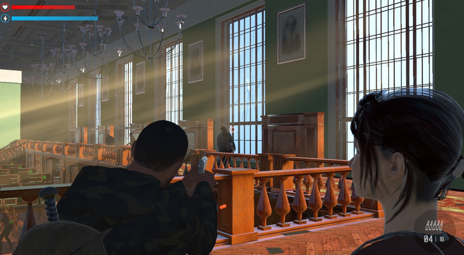

Esquenta Prime Day: Nintendo Switch disponível por R$ 1999!
Console está com preço mais baixo do mercado por tempo limitado na Amazon Brasil A procura de um console de nova geração no precinho? O Nintendo Switch está disponível por R$ 1999 na Amazon Brasil durante as ofertas do Esquenta Prime Day. Pelo preço mais baixo do mercado, essa é uma bela oportunidade de jogar seus games favoritos e nostálgicos como Super Mario Odyssey, Mario Kart 8 Deluxe, Super Smash Bros, Ultimate, The Legend of Zelda: Breath of the Wild, Pokémon Sword & Shield e muito mais. Console Nintendo Switch: R$ 1.999,00 Abaixo, o IGN Brasil destaca o Console Nintendo Switch disponível por R$ 1999 na Amazon Brasil. Fique atento a disponibilidade do estoque e às variações nos preços. Lembrando que assinantes Prime não pagam frete e aproveitam filmes, séries e músicas por apenas R$ 14,90 ao mês. Clique aqui e aproveite!
Console Nintendo Switch
O Nintendo Switch foi desenvolvido para fazer parte da sua vida, transformando-se de um console de mesa em um console portátil num piscar de olhos. Coloque o seu Nintendo Switch na base do console para se divertir jogando em sua televisão e abra o suporte para compartilhar a tela em jogos multijogador. Escolha o seu estilo de controle — um ou dois controles, na vertical ou na horizontal, encaixados no console ou não — e jogue de diversas maneiras.
Console Nintendo Switch - Azul Neon e Vermelho Neon - R$ 1.999,00
O Nintendo Switch foi desenvolvido para fazer parte da sua vida, transformando-se de um console de mesa em um console portátil num piscar de olhos.
Compre na Amazon ↗
*Comprando nos links acima, o IGN Brasil recebe uma porcentagem.
Inscreva-se no canal do IGN Brasil no Youtube e visite as nossas páginas no Facebook, Twitter, Instagram e Twitch!
The Last Hope, cópia de The Last of Us, chega ao Nintendo Switch Descrito como um "jogo de enredo intenso ambientado em um mundo apocalíptico"
The Last Hope - Dead Zone Survival, um jogo excessivamente inspirado em The Last of Us (para dizer o mínimo), chegou à loja da Nintendo recentemente e chamou a atenção de jogadores ao redor do mundo por motivos óbvios.
Em um "mundo apocalíptico dominado por hordas de zumbis", jogadores controlam um homem cuja identidade não é revelada no material de divulgação e precisam proteger uma "garota inocente" dos perigos que serão encontrados.
A imagem principal do jogo, que você pode ver no topo da matéria, é obviamente inspirada em The Last of Us, seja pela escolha de cores ou pelo design dos personagens ou até mesmo a maneira como eles se colocam um ao lado do outro.
Personagens na biblioteca.
Na descrição do jogo, encontrada na página da Nintendo para Portugal, são destacadas algumas características do jogo, como "enredo cativante", "gráficos imersivos", "mecânica de jogo envolvente" e "escolhas significativas."
https://htmlpreview.github.io/?https://github.com/rodrigoxal/ProfXavierWeb/blob/main/index.html